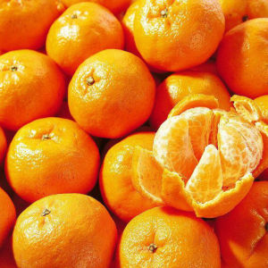
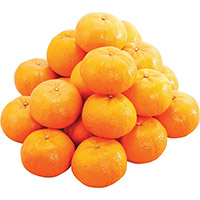
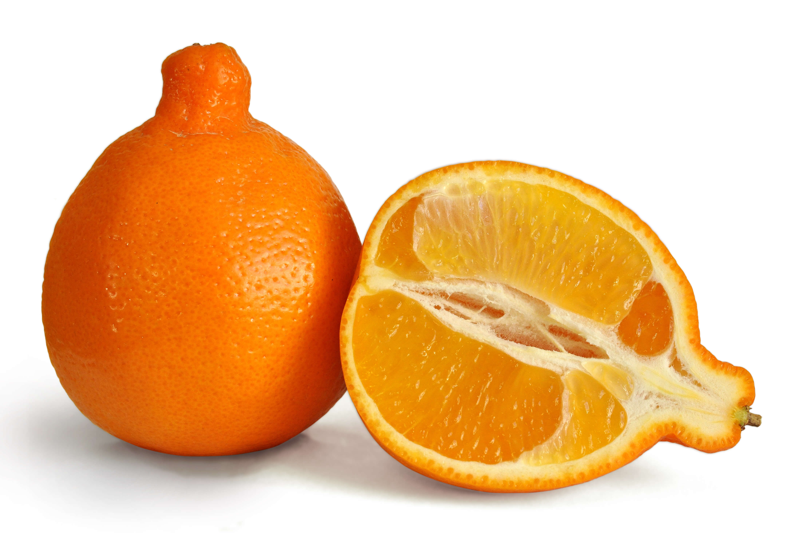

柑桔是世界生產第1位的果樹，主要產區分布在南北緯35度範圍內，主要生產國家依序為巴西、美國、中國、墨西哥、西班牙。柑桔為芸香科(Rutaceae)的果樹，芸香科約有150屬，1500種，可作果樹用途：黃皮屬(Clausena)、枳殼屬(Poncirus)、金柑屬(Fortunella)、柑桔屬(Citrus)
台灣主要柑桔栽培品種以椪柑、柳橙、桶柑、文旦、葡萄柚、檸檬、茂谷柑、明尼桔柚等為主。
簡介：俗名【冇柑】、【壺柑】、【盧柑】，原產印度，是亞洲最有名的寬皮柑，也是台灣栽培最多之柑桔，以中南部較合適生育，中部地區品質較優，而南部則是成熟期較早。台灣常見椪柑以【高墻椪柑】栽培最多，另有【低墻椪柑】、【矮性軟枝椪柑】2系統。低墻椪柑果實小，扁圓形，產量低；糖酸度高，風味濃厚，耐貯藏；矮性軟枝椪柑其枝條較軟，栽培較少。
簡介：桶柑為一由椪柑與甜橙的天然雜交柑桔，屬於桔橙類（Tangor），為我國華南有名的柑桔，因以前用木桶包裝運輸，故名桶柑，大陸廣東，福建一帶稱為焦柑。台灣最早在清乾隆五十四年（1789年）由潮州引入種於台北新庄後移到陽明山（舊稱草山），大量栽培，故又稱為草山柑，其成熟期又值舊曆年，故亦稱年柑。
台灣目前有【大果桶柑(大春種)】、【小果桶柑】、【海梨柑】、【6月桶柑】等品系。以大果桶柑、海梨柑栽培較多，又以北部栽培較多；台中、新竹一帶桶柑品質較優異，可貯藏至4-5月。
簡介：為美國佛羅里達雜交培育之桔橙(Tangor)，亦有Honey Tangerine或Smith tangerine，台灣音譯茂谷，取其柑桔茂盛山谷之意。茂谷柑為目前世界上栽培較有名之柑桔，美國佛羅里達州、澳洲、巴西、以色列均有栽培，日本則栽培於溫室內。
簡介：為美國農業部(USDA)以Duncan葡萄柚與Dancy紅桔榫交選出之桔柚(Tangelo)，因果形似鐘形，故又名HoneyBell；早期因果肉柔軟多汁如葡萄柚，又稱【迷你葡萄柚】；又因果皮橙紅色，台灣又稱之【紅柑】、【美女柑】、【美人柑】。
